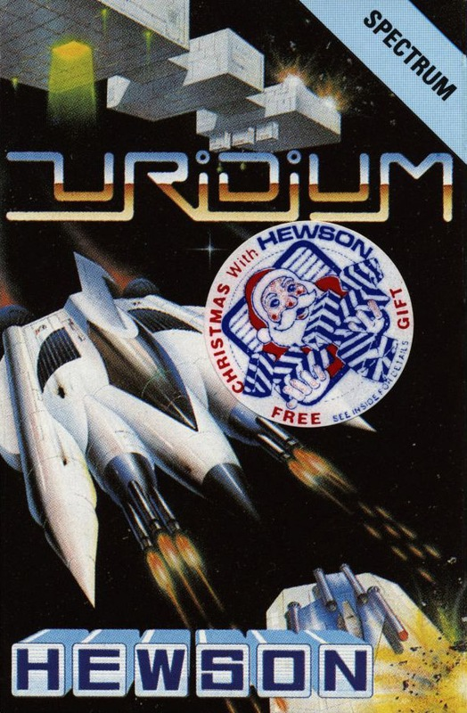
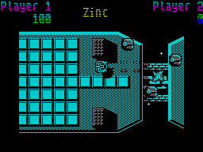
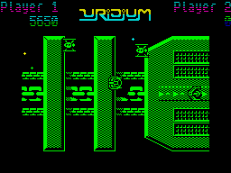
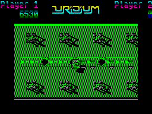

Uridium


{kind=link}

| Publisher: | Hewson Consultants |
| Price: | £8.95 |
| Year: | 1986 |
| Source: | CRASH, Issue 35 |

The Commodore game they said couldn’t be done on the Spectrum has finally arrived. Dominic Robinson, a newcomer to the Hewson fold of programmers, has converted Uridium from the original that was designed and written by Andy Braybrook.

of a Copper Dreadnaught Cam’s taking
on at the moment
High above a planet’s surface huge battle cruisers called Dreadnaughts silently move into combat position. The reason for this sudden and unannounced invasion is simple; the Dreadnaughts need vast amounts of fuel. In order to get it, they must tap planetary cores and drain them of minerals. Naturally, this will result in the destruction of each planet in the sector if nothing is done.
Your task as a super pilot is to fly your nifty Manta over the Dreadnaughts and make space safe by destroying each one in turn. The odds are stacked heavily against you but size is on your side. The Manta is small and versatile enough to fly very close to the Dreadnaughts and it can attack the fighters that patrol the ship’s hull. The aim is to wipe out all the ancillary craft, inflict as much damage as possible and destroy the giant space ships.
However, there is a severe drawback to this plan of action. Those fighter pilots aren’t just going to sit back and let you get away with all this carnage and mayhem — they’re out in force and they’re gunning for you. Luckily your Manta has been equipped with powerful lasers which don’t need recharging and can make short work of a fighter craft — if you’re quick enough to catch it that is.

our Cam as his Manta zooms along the
hull of the first mineral-thieving space
leviathan
A shrill siren lets you know when an attack wave is imminent, but you never know whether this attack is coming from the front or if it’s going to be a crafty assault from behind. Whichever it is, you must keep your wits about you and remain cool at all times. Bonus points are awarded for destroying a complete wave of fighters.
As well as the fighters zooming in to attack there is an added danger: the Dreadnaught hulls are a veritable obstacle course sprouting ariels, flanges and ducts. Sometimes sheer walls of metal rise up to meet you as you pilot your Manta at great speed — these can be identified by the shadows they cast on the hull. If your Manta crashes into an obstacle it is destroyed, and one of your three lives is lost. Some hull features can also be shot, adding to the amount of destruction inflicted on the huge mother ship.
Homing mines present another problem. Automatic launchers are activated when your Manta flies over them, and when they turn red they release a mine which chases your craft. A lot of quick evasive manoeuvering is called for to escape a mine.

runway were enemy fighters until our
Cam blasted them. Always going for the
High Score, our Cam. Better watch out
for those pylon doobries at the top and
bottom of the screen, though
To avoid some of the obstacles on the hull you must fly at right angles and squeeze through some tight gaps. Holding down fire and moving up or down flips the Manta sideways and slowing down brings the Manta back to its normal aspect. If you slow down and stop, the Manta loops and rolls to face in the other direction — a useful evasive manoeuvre. Looping also lifts the craft momentarily higher off the surface of the Dreadnaught, which might help to avoid an enemy fighter or an obstacle.
After your Manta has been in flight for a while the words ‘Land Now’ flash up at the top of the screen, accompanied by another siren. You now have to fly your Manta to the end of the Dreadnaught where there is a landing strip. Once you have set your craft down neatly on this landing strip, you automatically progress to the next Dreadnaught where the fun starts all over again.
There are fifteen Dreadnaughts to destroy. Each one has a different layout, more features and more attack waves for you to deal with — if you like you can play the two player option with a fellow pilot and race to save the universe...
CRITICISM
“Wowee!! This game is absolutely mega. I don’t care how well it compares to the Commodore version, because it’s probably the best shoot em up that I’ve ever seen on a Spectrum. The graphics are brilliant, with some excellent scrolling, which of course isn’t up to the standard of the 64 version, but it is quite stunning for the Spectrum. The title tune is very good, and the game moves at a frantic pace, often resulting in cries of ‘What hit me?’ and ‘it missed!’, but this is all jolly good, destructive fun, and that’s what I like about it.”
“I really didn’t expect Uridium to be up to the standards of the Commodore version, and it isn’t — but it is an extremely good, fast translation. The graphics are very well done, but the monochromatic display can make it difficult to see the action. The scrolling is very fast and smooth, but I found that the Manta took quite a long time to respond when turning around. The sound consists of a good title tune and decent spot effects during the game. Overall, a first rate shoot em up.”
“I can’t really say that I was looking forward to seeing this on the Spectrum as so many games C64 games die when they’re converted for our faithful Sinclair. Thankfully there is still plenty of life in Uridium ZX — admittedly it has lost its colour and some of its sound but it’s one of the best shoot em ups around. The speed at which the game plays is truly amazing, the screen scrolls at a tremendous rate and nothing slows down when a load of nasties come on the screen. The graphics are excellent, and everything is superbly drawn. The sound too is top hole: the tune on the title screen is marvellous and there are some worthy sound effects during the game. If you are a shoot em up freak then go out and buy this, you’re not going to see better for a long while.”
COMMENTS
| Control keys: | Left Z, Right X, Up L, Down SYMBOL SHIFT, FIRE ENTER, Pause P |
| Joystick: | Kempston |
| Keyboard play: | Joystick is easier |
| Use of colour: | Mainly monochromatic |
| Graphics: | Very neat fast scrolling |
| Sound: | Really exciting and useful spot effects plus a tune at the beginning |
| Skill levels: | One |
| Screens: | Scrolling play area |
| General rating: | A very worthy version of a fast-moving shoot em up. |
| Use of computer: | 89% |
| Graphics: | 89% |
| Playability: | 90% |
| Getting started: | 89% |
| Addictive qualities: | 90% |
| Value for money: | 88% |
| Overall: | 90% |